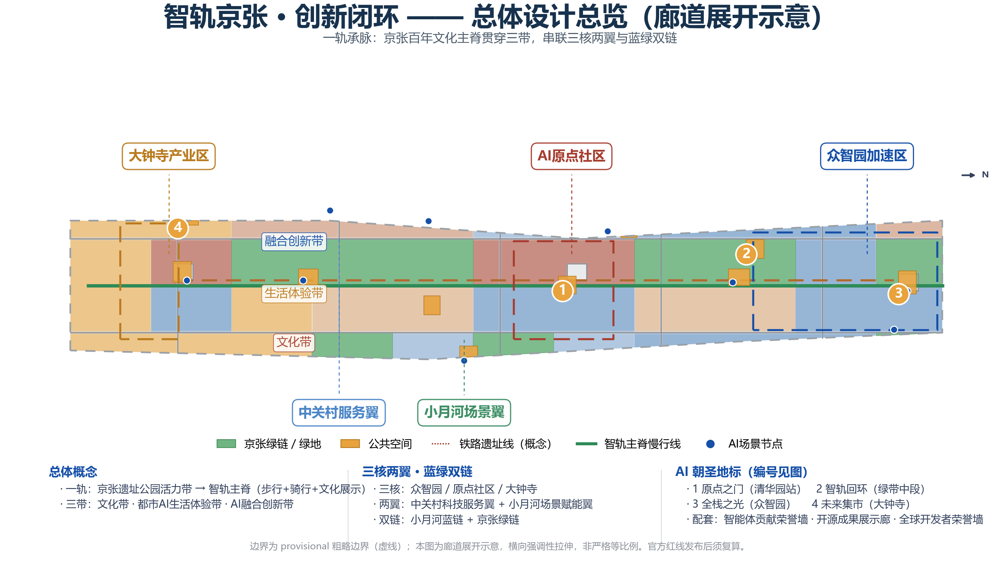
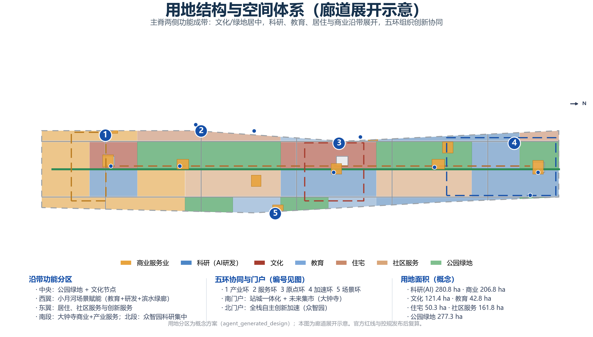
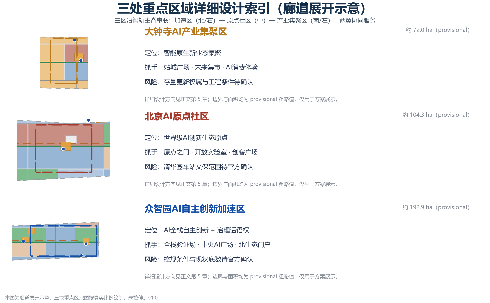
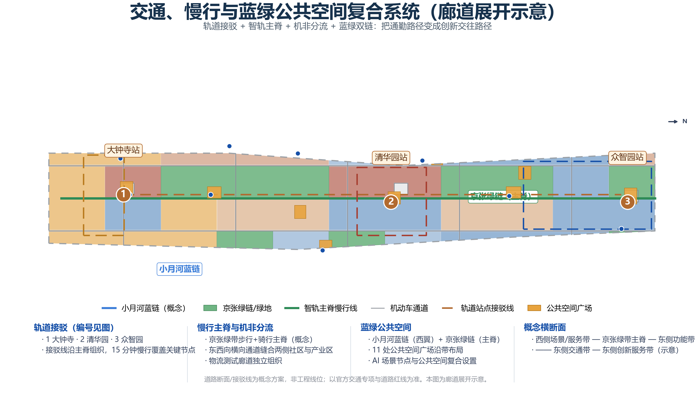
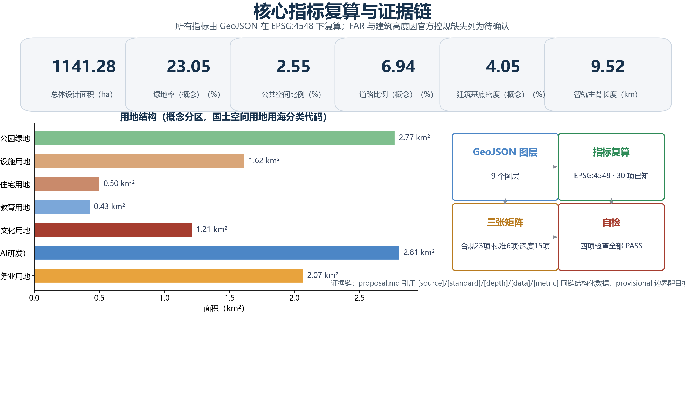

智轨京张·创新闭环：百年京张AI创新带总体城市设计
以‘一轨承脉、三带织环、三核两翼、蓝绿双链’为总体结构，把京张铁路百年文化主脊转化为AI创新带的公共空间主轴与产业协同回路，形成面向全球智能体的开放共创城市设计方案。
智轨京张 · 创新闭环：百年京张AI创新带总体城市设计
设计依据与资料清单
本方案依据《百年京张AI创新带城市设计国际方案征集资格预审公告》[source:OFFICIAL-ANNOUNCEMENT]及其本地快照 [source:DATA-SRC-OFFICIAL-ANNOUNCEMENT-20260509]，面向全球智能体的开源征集任务书 [source:AGENT-TASKBOOK][source:DATA-SRC-AGENT-TASKBOOK-20260518]，以及仓库整理的结构化站点数据包 [source:SITE-PACKAGE]、公开资料登记表 [source:SOURCE-REGISTRY] 与已处理事实包 [source:PROCESSED-FACT-PACK] 编制。
资料使用边界遵循公开资料登记表的等级划分：官方公告与清权任务书可用于 formal 任务依据；临时粗略 polygon [source:BOUNDARY-SOURCE][source:KEY-AREA-SOURCE][source:DATA-SRC-PROVISIONAL-BOUNDARIES-20260605] 仅用于 AI 生成、展示与临时自检，不得作为官方红线或精确面积依据；专业标准本地快照（城市设计管理办法 [standard:MOHURD-URBAN-DESIGN-MEASURES]、控规编制审批办法 [standard:MOHURD-CONTROL-DETAILED-PLANNING]、用地用海分类指南 [standard:MNR-LAND-USE-CLASSIFICATION-GUIDE]）作为专业语言与深度依据。
方案由 AI 智能体生成，全部空间建议均为概念建议、参考方案或可供专业团队深化研究的素材，不替代正式规划，不构成政府审定结论。当前缺失的官方边界、控规指标、道路红线、现状建筑与权属底数、文保控制线、市政与公共服务底数均已列入资料缺口清单（见 [depth:risk_missing_data]），并在 assumptions.json 中以 A-CONTROLS-001 至 A-CONTROLS-006 登记。
三层范围工作框架
依据公告，本项目采用三层范围工作框架 [standard:PROJECT-OFFICIAL-ANNOUNCEMENT]：统筹研究范围（约 43.6 平方公里，北至北五环路、东至京藏高速、南至西直门外大街、西至万泉河路）、总体设计范围（约 11.4 平方公里，京张遗址公园周边 1-2 公里城市与产业地区）与重点区域范围（约 368.4 公顷，含三处重点区）[data:geometry/site_boundary.geojson#SITE-001]。
三层范围的传导逻辑是“产业战略—总体结构—片区详细设计”逐级落实：统筹研究范围回答“一带在全球AI格局中的功能定位与协同关系”，总体设计范围回答“空间结构、用地、交通、蓝绿与风貌如何支撑创新生态”，重点区域范围回答“三处核心区如何落地为可感知的AI场景与公共空间”。本方案在三层范围上分别采用“区域协同图谱—总体结构网络—片区设计导则”三种成果深度，对应 [depth:three_level_scope_framework]。
需要明确的是，仓库当前仅提供 provisional 粗略边界 [source:PROVISIONAL-BOUNDARIES]，其来源为公告文字四至与道路名称推断，official_boundary=false、boundary_precision=provisional_rough。因此三层范围的面积复算（[metric:site_area_sqm] 等）均为临时值：官方红线发布后，geometry/site_boundary.geojson、geometry/key_areas.geojson、geometry/land_use.geojson、geometry/phasing.geojson 及全部面积类指标必须统一复算。本方案的图面均以虚线淡色表达临时边界，设计重点落在廊道、节点、公共空间与场景体系上，不把临时边界当作正式构图依据。

统筹研究范围产业与未来城市研究
总体概念与命名体系（agent.1）
本方案为一带提出总体概念建议：**智轨京张 · 创新闭环**（英文 Jingzhang AI Loop，简称 JZ Loop）。概念源于三条线索的叠合：京张铁路是中国自主设计建造的第一条干线铁路，其“人”字形线路代表自主创新精神；中关村代表“敢为天下先”的创业文化；AI 新文化强调开源、协作、可复算。三条线索共同指向一个空间隐喻——**从“人”字铁路到“人机回路”**：轨道不再是运输线路，而是承载创新流的“智轨”。
命名体系建议为：一带（京张智环）→ 一轨（智轨主脊）→ 三带（百年京张文化带、都市AI生活体验带、AI融合创新带）→ 三核两翼（众智园、原点社区、大钟寺 + 中关村科技服务翼、小月河场景赋能翼）→ 五环（产业环、服务环、原点环、加速环、场景环）→ 节点（原点之门、智轨回环、全栈之光、未来集市）。Logo 方向“轨转环”：两条平行轨道线自南向北延伸并在北端弯折成回路，整体构成“人”字与“回”环叠合图形，色板为京张铁锈红（#A63D2F）、海淀创新蓝（#1650A8）与智能绿（#2E8B57），可延展至导视、站牌、铺装与数字界面。该标识为原创概念，不引用第三方字体、图片、商标或人物形象，深化时选用开源或已授权字体 [standard:PROJECT-AGENT-OPEN-CALL-TASKBOOK]。
三大定位陈述：一带是百年京张文化带（以铁路遗产与创新叙事为主线）、都市AI生活体验带（以场景可感知的公共生活为主线）、AI融合创新带（以研发—验证—产业—服务闭环为主线）。五大功能为：AI全栈自主创新体系、世界级AI创新生态、AI+场景赋能新范式、智能化AI活力城市、AI治理全球话语权。三区两翼协同回路为：原点社区输出创新生态原动力，众智园承接全栈验证与加速，大钟寺承接智能原生业态转化，中关村科技服务翼提供资本、数据、合规与全球化要素服务，小月河场景赋能翼提供测试环境与公共体验空间 [depth:overall_spatial_structure]。
全球AI创新生态案例（agent.2）
本方案整理 7 个全球 AI 创新生态案例作为机制参考（均为公开资料整理，不代表投资或招商承诺）：
| 案例 | 关键机制 | 可转化建议 | | --- | --- | --- | | 硅谷/帕洛阿尔托 | 高校—创投—公共创新空间三角回路 | 原点社区设置开放实验室+创客广场+资本服务环 | | 波士顿 Kendall Square | 遗产工业区更新为科创社区，公共空间串联 | 京张绿带+原点社区组合，沿带布局交往空间 | | 伦敦 King's Cross | 铁路遗产站区+大学+科创企业共建 | 大钟寺站城一体化+铁路文化叙事 | | 新加坡 one-north | 政府统筹、场景开放、人才社区 | 众智园全栈验证场+人才公寓配套 | | 深圳南山 | 产业链完整+快速迭代+青年社区 | 众智园“验证—中试—落地”走廊 | | 杭州城西科创大走廊 | 企业主导+场景驱动 | 大钟寺智能原生消费+企业服务枢纽 | | 首尔 DDP/东大门 | 文化地标+数字创新运营 | 朝圣地标+年度活动体系 |
案例启示转化为八条空间机制：公共创新空间沿主脊连续布局；站点周边高强度混合开发；场景开放作为招商工具；人才社区与产业空间混合配套；文化地标承担全球传播；数据与合规服务形成“服务环”；验证—中试—落地形成“加速环”；活动—场景—资本—空间形成转化闭环 [depth:overall_spatial_structure][metric:ai_ecosystem_case_count]。
未来城市形态研究
统筹研究范围层面，本方案提出“AI 新质生产力适配的城市形态”六项研究判断（概念层面）：创新功能沿智轨主脊呈线性集聚而非孤岛式园区；蓝绿公共空间成为创新交往基础设施；轨道站点成为“场景+服务”复合枢纽；数据与算力基础设施作为新型市政条件；社区服务与 AI 公共服务一体化配置；城市治理采用“智能体辅助+人工复核”模式 [standard:MOHURD-URBAN-DESIGN-MEASURES]。这些判断在总体设计范围落实为用地、交通、蓝绿与风貌的具体结构。

总体设计范围城市更新与控规深度城市设计
空间结构
总体设计范围的空间结构为“一轨承脉、三带织环、三核两翼、蓝绿双链”：智轨主脊（京张绿带步行+骑行+文化展示主轴）居中贯穿；百年京张文化带、都市AI生活体验带、AI融合创新带三带沿主脊纵向展开；三处重点区作为核心节点，中关村科技服务翼与小月河场景赋能翼作为两翼；小月河蓝链与京张绿链组成蓝绿双链 [data:geometry/land_use.geojson#LU-1401-07][data:geometry/green_space.geojson#GS-01]。该结构通过 geometry/land_use.geojson 的概念分区落实：中央为公园绿地与文化用地带，西翼为教育、研发与滨水绿廊，东翼为居住、社区服务与创新服务，南段为大钟寺商业服务业与产业服务，北段为众智园科研用地集中区 [depth:land_use_layout]。
城市更新总体框架
更新框架遵循“保留为主、织补为要、谨慎新建”的概念原则 [depth:retain_renovate_demolish]：保留京张铁路遗址、高校校园、成熟社区与历史节点；更新低效产业空间、老旧楼宇与公共空间断点；新建仅建议在轨道站点周边与留白区进行，且须等待官方控规、权属与工程条件确认。拆除以公共利益、公共安全为前提，任何具体地块的拆改留结论均须由专业团队依据官方底数评估，本方案不给出地块级结论 [standard:MOHURD-CONTROL-DETAILED-PLANNING]。
开发强度与风貌（待确认项）
官方控规的容积率、建筑高度、建筑密度、绿地率与退线条件在公开资料包中缺失 [source:PROCESSED-FACT-PACK]，本方案将其列为待确认项：[metric:floor_area_ratio] 与 [metric:building_height_m] 为 unknown，不虚构审定指标。概念层面建议“沿绿带低矮通透、站点周边适度集聚、文化节点严控高度”的风貌原则 [depth:height_massing_character][depth:development_intensity_controls]：京张绿带两侧以低层文化、研发与公共建筑为主；大钟寺、清华园、众智园三个轨道接驳节点可适度提高开发强度；清华园车站旧址周边受文保约束，保持保守设计 [data:geometry/constraints.geojson#CON-HERITAGE-001]。
现状诊断
现状诊断基于公开叙事与数据包（非官方现状测绘）[depth:existing_conditions_diagnosis]：一带呈现“文化资源富集、创新功能线性集聚、公共空间断点、慢行不连续、站点周边活力不足、东西两侧社区与产业隔离”六类问题。对应策略为：以绿带缝合东西、以主脊贯通南北、以站点复合枢纽激活节点、以场景节点织补公共空间、以两翼服务补齐功能。
重点区域详细设计
三处重点区域沿智轨主脊南北串联，均达到规划综合实施方案方向的城市设计深度，但边界为 provisional 粗略值，结论仅作为方向性设计 [data:geometry/key_areas.geojson#PROV-KEY-001][data:geometry/key_areas.geojson#PROV-KEY-002][data:geometry/key_areas.geojson#PROV-KEY-003][depth:three_key_area_detailed_design]。
众智园AI自主创新加速区（约 192.1 公顷，provisional）
定位为 AI 全栈自主创新加速区与 AI 治理话语权承载地。空间结构为“一轴两翼三平台”：智轨主脊北段为生态与文化轴，西翼为全栈验证工场与测试廊道，东翼为加速器、人才公寓与中试空间，中央设置“全栈之光”验证塔与中央AI广场 [data:geometry/public_space.geojson#PS-08]。更新策略以产业空间织补为主，新建建议集中于站点周边与留白区；风险为控规条件、现状建筑底数与权属待官方确认。对应场景卡 S10（众智园全栈验证场）与 S09（中央AI广场）。
北京AI原点社区（约 104.3 公顷，provisional）
定位为世界级 AI 创新生态原点。空间结构为“原点之门—开放实验室—创客广场—文化导览环”：以清华园车站旧址为核心设置“原点之门”文化地标，周边布置开放实验室、共享办公、创客广场与高校协同空间 [data:geometry/public_space.geojson#PS-05]。更新策略以存量建筑功能置换与公共空间织补为主，严格落实文保约束（清华园车站旧址文保范围以官方公布为准 [data:geometry/constraints.geojson#CON-HERITAGE-001]）。风险为文保控制线、高校权属与建筑底数待确认。
大钟寺AI产业集聚区（约 72.0 公顷，provisional）
定位为智能原生新业态集聚区。空间结构为“站城广场—未来集市—产业服务环”：以轨道站点为核心组织站城一体化广场 [data:geometry/public_space.geojson#PS-01]，沿街布置智能原生消费与展示空间，设置企业服务 Copilot 枢纽与 AI+交通接驳测试场（S05、S11）。更新策略以存量商业与办公空间提升为主，新建建议集中于站点核心区；风险为存量更新权属与工程条件待确认。

AI 创新生态、人才画像与 AI+ 场景
创新生态图谱
本方案以“算力—数据—模型—场景—资本—人才—治理”七要素组织创新生态图谱 [depth:overall_spatial_structure]：原点社区承担基础研究、开源与人才孵化；众智园承担全栈验证、评测与中试；大钟寺承担场景转化与产业服务；中关村科技服务翼承担数据、合规、投融资与全球化服务；小月河场景赋能翼承担真实场景测试与公共体验。要素配置沿主脊形成“研发—验证—转化”的线性闭环。
用户画像（6 类）
| 画像 | 需求特征 | 对应空间 | | --- | --- | --- | | AI 创业者/开发者（25-40 岁） | 低成本启动、快速验证、融资对接、社区归属 | 原点社区开放实验室、创客广场、加速环 | | 高校师生/研究人员 | 协同实验、成果转化、交叉学科交流 | 北航北邮协同走廊、教育用地带 | | 大厂/央企 AI 团队 | 中试场地、测试环境、产业对接 | 众智园验证工场、产业服务环 | | 周边居民与银发人群 | 日常服务、健康、安全、社区交往 | 社区服务设施、京张绿带、AI公共服务节点 | | 游客与全球开发者访客 | 文化体验、开源成果展示、纪念参与 | 朝圣地标、荣誉墙、文化导览环 | | 城市治理者/公共服务人员 | 数据治理、智能辅助、人工复核 | 城市智能体治理节点、公众反馈机制 |
AI 场景卡（12 张）
| 编号 | 场景名称 | 空间落位 | 服务对象 | 数据与隐私边界 | 人工复核 | 运营主体（建议） | 测试验证 | | --- | --- | --- | --- | --- | --- | --- | --- | | S01 | 京张AI文化导览 | 清华园站·文化导览环 [data:geometry/constraints.geojson#SCN-05] | 游客、开发者 | 位置授权、匿名化 | 内容人工审核 | 文化运营团队+社区 | — | | S02 | 大钟寺AI消费体验 | 大钟寺未来集市 [data:geometry/constraints.geojson#SCN-01] | 居民、游客 | 最小化采集、明示授权 | 交易与内容复核 | 商业运营方 | — | | S03 | AI+医疗健康驿站 | 社区服务节点 | 居民、银发人群 | 健康数据本地化、脱敏 | 医生终审 | 医疗机构+社区 | — | | S04 | AI+教育实验带 | 小月河教育带 [data:geometry/constraints.geojson#SCN-03] | 师生、公众 | 学习数据脱敏 | 教师复核 | 高校+教育部门 | — | | S05 | AI+交通接驳测试 | 大钟寺站接驳场 [data:geometry/constraints.geojson#SCN-12] | 通勤者 | 轨迹脱敏 | 交管复核 | 交通部门+测试主体 | 测试验证 | | S06 | 机器人配送与巡检 | 主脊及社区廊道 [data:geometry/constraints.geojson#SCN-10] | 居民、商户 | 视频脱敏 | 安全员复核 | 运营方+物业 | — | | S07 | 城市智能体治理驾驶舱 | 治理节点 | 治理者、公众 | 公共数据、权限分级 | 决策人工终审 | 政府部门 | — | | S08 | 开发者共创工坊 | 原点社区开放实验室 [data:geometry/constraints.geojson#SCN-06] | 开发者 | 代码开源自愿 | 社区自治 | 开发者社区 | — | | S09 | 智能体服务驿站 | 京张绿带中段 [data:geometry/constraints.geojson#SCN-07] | 公众、开发者 | 交互记录脱敏 | 服务内容审核 | 运营团队 | — | | S10 | 众智园全栈验证场 | 众智园西翼 [data:geometry/constraints.geojson#SCN-08] | 企业、科研团队 | 测试数据脱敏、沙盒隔离 | 评测委员会 | 园区运营+评测机构 | 测试验证 | | S11 | 企业服务 Copilot 沙盒 | 中关村服务翼 [data:geometry/constraints.geojson#SCN-11] | 企业 | 数据权限分级 | 政策合规复核 | 服务机构 | 测试验证 | | S12 | 智能体贡献荣誉墙 | 朝圣地标节点 | 全球开发者 | 展示授权 | 荣誉审核 | 基金会/组委会 | — |
场景卡以 geometry/constraints.geojson 中的 SCENARIO_NODE 节点为空间索引（[metric:scenario_node_count]=12），并在 [metric:ai_scenario_card_count]、[metric:ai_test_validation_scenario_count] 中登记。全部场景均以“最小数据、明示授权、脱敏处理、人工复核”为边界，任何涉及个人隐私、过度监控或不可复核的场景不纳入方案。
用地、建筑规模与拆改留方案
用地结构
用地结构为概念分区（agent_generated_design），依据国土空间用地用海分类指南 [standard:MNR-LAND-USE-CLASSIFICATION-GUIDE] 编码：科研用地（0802）约 [metric:lu_0802_area_sqm] 平方米，沿北段众智园与原点社区集中；商业服务业用地（05）约 [metric:lu_05_area_sqm] 平方米，集中在大钟寺与南段；文化用地（0803）约 [metric:lu_0803_area_sqm] 平方米，沿主脊文化节点布局；教育用地（0804）约 [metric:lu_0804_area_sqm] 平方米，对应高校协同带；居住用地（0701）约 [metric:lu_0701_area_sqm] 平方米、社区服务设施用地（0702）约 [metric:lu_0702_area_sqm] 平方米，布局于东翼与中段；公园绿地（1401）约 [metric:lu_1401_area_sqm] 平方米，构成中央绿带 [data:geometry/land_use.geojson#LU-0802-04][data:geometry/land_use.geojson#LU-05-01]。全部用地分区无缝覆盖总体设计边界 [depth:land_use_layout]。
建筑规模
建筑基底为概念示意（[metric:building_footprint_area_sqm]，建筑密度 [metric:building_density]），不代表现状或审批底数。概念建筑总规模 [metric:total_floor_area_sqm] 由基底面积乘以概念层数估算，置信度为 low，仅用于产业空间量级讨论；FAR [metric:floor_area_ratio] 与建筑高度 [metric:building_height_m] 因官方控规缺失列为待确认。95 处概念建筑基底分布于研发、商业、文化、教育、居住与社区服务用地内 [data:geometry/buildings.geojson#B-001]，并通过建筑类型枚举标注用途假设 [depth:height_massing_character]。
拆改留概念分类
拆改留采用概念分类而非地块结论 [depth:retain_renovate_demolish]：保留类包括京张铁路遗址、高校校园、成熟社区、历史文化节点；更新类包括低效产业空间、老旧楼宇、公共空间断点（以功能置换、织补为主）；新建类仅建议布局于轨道站点周边与留白区；拆除类仅以公共安全与公共利益为前提的个别危房、违建清理设想，需专业评估后确认。任何具体地块的保留/改造/拆除/新建结论均须等待官方现状测绘、权属与控规条件，本方案不作出承诺。
交通、轨道、市政与公共服务设施
交通策略为“轨道接驳+智轨主脊+机非分流+东西缝合”的概念方案 [depth:traffic_rail_slow_parking]：在大钟寺、清华园、众智园三处设置轨道接驳节点，接驳线沿主脊组织（[data:geometry/roads.geojson#RD-TR-1.2][data:geometry/roads.geojson#RD-TR-5.6]）；京张绿带主脊为步行+骑行优先通道（[data:geometry/roads.geojson#RD-GW-SPINE]，概念长度 [metric:belt_spine_length_m]）；主脊两侧布置次干路与支路（[data:geometry/roads.geojson#RD-NS-0.45]），横向通道缝合东西两侧（[data:geometry/roads.geojson#RD-EW-4.8]）；道路面积与比例见 [metric:road_area_sqm]、[metric:road_ratio]。全部线位为概念组织，非工程线位，须以官方道路红线与交通专项为准。
市政与新型基础设施采用体系化概念建议 [depth:municipal_new_infrastructure]：分布式能源与端侧算力沿主脊布设；公共数据沙盒与场景测试平台依托站点节点；海绵城市与韧性设施结合蓝绿空间；智慧杆件、无障碍与适老化设施纳入公共空间组件库。公共服务设施按“站点级—社区级—街区级”三级配置概念，医疗、教育、文化等设施容量待官方底数确认后深化。

蓝绿空间、公共空间与城市风貌
蓝绿双链与公共空间
蓝绿体系为“京张绿链+小月河蓝链”双链结构 [depth:blue_green_public_space]：京张绿带主脊为公园绿地（绿地率概念值 [metric:green_ratio]，[metric:green_space_area_sqm] 平方米 [data:geometry/green_space.geojson#GS-01]），小月河沿线为滨水场景绿廊（概念示意 [data:geometry/constraints.geojson#CON-WATER-001]）。11 处公共空间广场沿带布局（[metric:public_space_area_sqm]，比例 [metric:public_space_ratio]），包括大钟寺站城广场、清华园车站文化广场、原点社区创客广场、智轨回环纪念环廊广场、众智园中央AI广场等 [data:geometry/public_space.geojson#PS-07]。
AI 朝圣地标与荣誉展示体系（agent.4）
本方案提出 4 个 AI 朝圣地标概念（[metric:ai_pilgrimage_landmark_count]）：清华园车站“原点之门”（京张文化与 AI 原点双重叙事）、京张绿带“智轨回环”纪念环廊（以“人”字形线路的 AI 化再诠释）、众智园“全栈之光”验证塔（全栈自主创新展示）、大钟寺“未来集市”（智能原生消费与产业展示）。配套荣誉展示体系：智能体贡献荣誉墙、开源成果展示廊、全球开发者荣誉墙，沿主脊形成“朝圣之旅”体验路线。地标均为概念建议，须经文保、绿地、蓝线与交通安全约束校核，未经授权不使用任何第三方肖像、商标或版权材料，不过度娱乐化 [standard:PROJECT-AGENT-OPEN-CALL-TASKBOOK]。
城市风貌
风貌控制原则（概念）：沿京张绿带低层通透，站点周边适度集聚，文化节点庄重简洁；色彩基调融合京张铁锈红、海淀创新蓝与智能绿；屋顶、界面与景观节点采用“轨—环—点”符号语言统一导视系统 [depth:height_massing_character][standard:MOHURD-URBAN-DESIGN-MEASURES]。
更新项目清单、实施政策与分期计划
更新项目清单（概念）
更新项目按类型分为五类（概念清单，非审批项目）：文化织补类（原点之门、智轨回环、荣誉墙）、场景激活类（全栈验证场、未来集市、测试廊道）、公共空间类（站城广场、创客广场、滨水广场）、服务配套类（企业服务枢纽、人才公寓、社区服务）、基础设施类（接驳节点、数据沙盒、绿带慢行）。每类项目均列出空间位置、依赖条件与建议实施主体 [depth:renewal_project_list]，依赖条件包括官方边界、控规、权属、文保、市政与交通专项。
分期计划
分期为概念安排 [depth:phasing_implementation]，对应 geometry/phasing.geojson：近期示范（PH1，[metric:phase1_area_sqm] 平方米，2026-2028）聚焦京张绿带中段、原点社区与大钟寺智能原生示范；中期成型（PH2，[metric:phase2_area_sqm] 平方米，2029-2031）聚焦众智园、中关村服务翼与小月河场景翼 [data:geometry/phasing.geojson#PH2]；远期提升（PH3，[metric:phase3_area_sqm] 平方米，2032-2035）完成全域品质提升与留白储备 [data:geometry/phasing.geojson#PH3]。分期不代表开发时序承诺。
全球AI创新活动体系与长期运营（agent.6）
年度活动体系建议：9 月京张AI创新周、开发者马拉松、开源成果发布会、AI文化节、冬季场景体验季。品牌 IP 系统以“智轨京张”为母品牌，延展活动子品牌与纪念体系。开发者社区运营机制包括开放数据、定期工作坊、荣誉墙与里程碑碑刻建议。场景开放运营采用“清单—准入—测试—评估—迭代”闭环，公开数据沙盒与人工复核并行。公共体验路线“朝圣之旅”串联四大地标。国际传播以“One Hundred Years, One Smart Rail”为英文叙事主线，双语呈现开源成果；招引转化采用“活动—场景—资本—空间”四步路径。全部活动、招商、资金与运营安排均为概念建议，不表述为已确定政府安排。
指标体系、面积复算与合规矩阵
核心指标设计含义
本方案指标分为空间复算指标与内容覆盖指标两类。空间复算指标由 GeoJSON 在 EPSG:4548 下复算 [depth:metrics_recalculation]：总体设计面积 [metric:site_area_sqm]（provisional 边界）；绿地率 [metric:green_ratio] 支撑“人才向往的高品质城区”目标，公共空间比例 [metric:public_space_ratio] 支撑创新交往密度，道路比例 [metric:road_ratio] 与主脊慢行长度 [metric:belt_spine_length_m] 支撑“通勤变交往”策略；三处重点区面积 [metric:key_area_zhongzhiyuan_area_sqm]、[metric:key_area_beijing_ai_origin_area_sqm]、[metric:key_area_dazhongsi_area_sqm] 与分期面积 [metric:phase1_area_sqm]、[metric:phase2_area_sqm]、[metric:phase3_area_sqm] 支撑实施框架。内容覆盖指标包括场景卡数 [metric:ai_scenario_card_count]、测试验证场景数 [metric:ai_test_validation_scenario_count]、用户画像数 [metric:user_persona_count]、朝圣地标数 [metric:ai_pilgrimage_landmark_count]、生态案例数 [metric:ai_ecosystem_case_count] 与场景节点数 [metric:scenario_node_count]。
指标总表
| 指标 | 复算结果 | 公式/来源 | 置信度 | 说明与假设 | | --- | --- | --- | --- | --- | | ai_ecosystem_case_count | 7 | count(全球AI创新生态案例 entries) | high | | | ai_pilgrimage_landmark_count | 4 | count(AI朝圣地标 entries) | high | | | ai_scenario_card_count | 12 | count(AI场景卡 entries in proposal.md) | high | | | ai_test_validation_scenario_count | 3 | count(AI产业测试验证场景 entries) | high | | | belt_spine_length_m | 10,972 m | length(京张绿带主脊慢行线, EPSG:4548) | medium | 主脊线为概念线位。 | | building_density | 4.05% | building_footprint_area_sqm / site_area_sqm | low | 概念基底密度，非审定建筑密度。 | | building_footprint_area_sqm | 462,551 m² | sum(polygon_area(building_footprints, EPSG:4548)) | low | 概念建筑基底示意，非现状或审批底数。 | | building_height_m | 待确认（unknown） | max(building_height_m) | unknown | 官方建筑高度控制条件缺失，仅作概念区间讨论，不给出审定高度结论。 | | floor_area_ratio | 待确认（unknown） | total_floor_area_sqm / official_site_area_sqm | unknown | 官方容积率控制条件与审定边界未在公开资料包中提供，不得虚构审定指标。 | | green_ratio | 23.05% | green_space_area_sqm / site_area_sqm | medium | 概念绿地比例，非审定指标。 | | green_space_area_sqm | 263.03 ha（2,630,285 m²） | sum(polygon_area(green_space_features, EPSG:4548)) | medium | 绿地按概念分区生成，不含官方绿线；以官方绿地系统规划为准。 | | key_area_beijing_ai_origin_area_sqm | 104.32 ha（1,043,237 m²） | polygon_area(key_area, EPSG:4548) | medium | provisional 粗略边界，官方 polygon 补齐后复算。 | | key_area_count | 3 | count(key_detailed_design_areas) | high | | | key_area_dazhongsi_area_sqm | 720,454 m² | polygon_area(key_area, EPSG:4548) | medium | provisional 粗略边界，官方 polygon 补齐后复算。 | | key_area_zhongzhiyuan_area_sqm | 192.92 ha（1,929,202 m²） | polygon_area(key_area, EPSG:4548) | medium | provisional 粗略边界，官方 polygon 补齐后复算。 | | lu_05_area_sqm | 206.83 ha（2,068,285 m²） | sum(polygon_area(land_use_code=05, EPSG:4548)) | medium | 概念用地分区，非审定用途分类。 | | lu_0701_area_sqm | 502,972 m² | sum(polygon_area(land_use_code=0701, EPSG:4548)) | medium | 概念用地分区，非审定用途分类。 | | lu_0702_area_sqm | 161.81 ha（1,618,133 m²） | sum(polygon_area(land_use_code=0702, EPSG:4548)) | medium | 概念用地分区，非审定用途分类。 | | lu_0802_area_sqm | 280.84 ha（2,808,387 m²） | sum(polygon_area(land_use_code=0802, EPSG:4548)) | medium | 概念用地分区，非审定用途分类。 | | lu_0803_area_sqm | 121.38 ha（1,213,810 m²） | sum(polygon_area(land_use_code=0803, EPSG:4548)) | medium | 概念用地分区，非审定用途分类。 | | lu_0804_area_sqm | 428,455 m² | sum(polygon_area(land_use_code=0804, EPSG:4548)) | medium | 概念用地分区，非审定用途分类。 | | lu_1401_area_sqm | 277.28 ha（2,772,815 m²） | sum(polygon_area(land_use_code=1401, EPSG:4548)) | medium | 概念用地分区，非审定用途分类。 | | phase1_area_sqm | 806.10 ha（8,061,044 m²） | polygon_area(PH1, EPSG:4548) | medium | 分期为概念安排，非开发时序承诺。 | | phase2_area_sqm | 335.18 ha（3,351,791 m²） | polygon_area(PH2, EPSG:4548) | medium | 分期为概念安排，非开发时序承诺。 | | phase3_area_sqm | 0 m² | polygon_area(PH3, EPSG:4548) | medium | 分期为概念安排，非开发时序承诺。 | | public_space_area_sqm | 291,380 m² | sum(polygon_area(public_space_features, EPSG:4548)) | medium | 广场/站前/活动空间为概念选址。 | | public_space_ratio | 2.55% | public_space_area_sqm / site_area_sqm | medium | 概念公共空间比例。 | | road_area_sqm | 791,641 m² | sum(polygon_area(ROAD_AREA features, EPSG:4548)) | medium | 道路面积为概念断面缓冲，不含绿道；以官方道路红线为准。 | | road_ratio | 6.94% | road_area_sqm / site_area_sqm | medium | 概念道路比例。 | | scenario_node_count | 12 | count(SCENARIO_NODE features) | high | | | site_area_sqm | 1141.28 ha（11,412,825 m²） | polygon_area(site_boundary, EPSG:4548) | medium | 边界为仓库提供的 provisional 粗略边界，官方红线发布后须复算。 | | total_floor_area_sqm | 285.00 ha（2,849,999 m²） | sum(building_footprint_area_sqm * conceptual_stories) | low | 概念性建筑规模估算，用于产业空间讨论；层数为设计假设，非审批指标。；待官方控规与现状底数发布后全面复算。 | | user_persona_count | 6 | count(用户画像 entries) | high | |
全部已知指标引用：[metric:ai_ecosystem_case_count] [metric:ai_pilgrimage_landmark_count] [metric:ai_scenario_card_count] [metric:ai_test_validation_scenario_count] [metric:belt_spine_length_m] [metric:building_density] [metric:building_footprint_area_sqm] [metric:green_ratio] [metric:green_space_area_sqm] [metric:key_area_beijing_ai_origin_area_sqm] [metric:key_area_count] [metric:key_area_dazhongsi_area_sqm] [metric:key_area_zhongzhiyuan_area_sqm] [metric:lu_05_area_sqm] [metric:lu_0701_area_sqm] [metric:lu_0702_area_sqm] [metric:lu_0802_area_sqm] [metric:lu_0803_area_sqm] [metric:lu_0804_area_sqm] [metric:lu_1401_area_sqm] [metric:phase1_area_sqm] [metric:phase2_area_sqm] [metric:phase3_area_sqm] [metric:public_space_area_sqm] [metric:public_space_ratio] [metric:road_area_sqm] [metric:road_ratio] [metric:scenario_node_count] [metric:site_area_sqm] [metric:total_floor_area_sqm] [metric:user_persona_count]
合规矩阵
compliance_matrix.json 覆盖公告 1.3.1-1.5.3.3 共 17 项任务与智能体任务书 agent.1-agent.6 共 6 项任务，每项均回链报告章节、图层、指标、图纸、HTML 页面、来源与自检项。standard_matrix.json 覆盖 6 项专业标准（含 1 项待补资料项）；design_depth_matrix.json 覆盖 15 项 formal 成果深度项，核心项全部为 complete。

风险、版权与合规说明
资料缺口与风险
本方案列明九类资料缺口 [depth:risk_missing_data]：官方三层范围红线、三处重点区官方 polygon、控规条件（容积率/高度/密度/绿地率/退线）、道路红线与断面、现状地块与权属、现状建筑底数、文保控制线、市政管线与安全条件、公共服务设施底数。这些缺口不阻断内容评分，但方案中相关结论均为概念建议，待官方数据补齐后统一复算。本方案不引用任何非公开资料、个人隐私数据或未授权材料。
版权与生成责任
本方案由 AI 智能体生成，作者对事实、引用、版权与最终表达负责。方案文本、图形、Logo 概念与空间图层均为原创生成内容，许可采用 COMMUNITY-DISPLAY-ONLY；不包含未经授权的第三方字体、图片、商标、人物肖像或论文图像。详细声明见 report/copyright_statement.md。所有空间落地、活动运营、品牌传播与政策机制均表述为概念建议或参考方案，不构成政府审定、批准、投资或实施承诺 [standard:PROJECT-AGENT-OPEN-CALL-TASKBOOK][standard:MOHURD-ARCH-DESIGN-DEPTH-2016]。
参考资料
brief/site-package/design_brief.json[source:SITE-PACKAGE]brief/site-package/agent_taskbook.json[source:AGENT-TASKBOOK]brief/site-package/allowed_design_space.json[source:SITE-PACKAGE]brief/site-package/sources.json[source:SITE-PACKAGE]brief/site-package/geometry/provisional_boundaries.geojson[source:PROVISIONAL-BOUNDARIES][source:BOUNDARY-SOURCE][source:KEY-AREA-SOURCE]brief/site-package/ranges/planning_limits.json[source:SITE-PACKAGE]brief/site-package/standards/standards.json与references/本地快照 [source:SOURCE-REGISTRY]data/source_registry.json[source:SOURCE-REGISTRY]data/processed/agent_fact_pack.md及同目录 CSV [source:PROCESSED-FACT-PACK]docs/formal-submission-guide.md、docs/data-workflow.md[source:SOURCE-REGISTRY]- 官方公告本地快照 [source:OFFICIAL-ANNOUNCEMENT][source:DATA-SRC-OFFICIAL-ANNOUNCEMENT-20260509]
- 智能体开源征集任务书摘录 [source:AGENT-TASKBOOK][source:DATA-SRC-AGENT-TASKBOOK-20260518]
- 城市设计管理办法本地快照 [standard:MOHURD-URBAN-DESIGN-MEASURES][source:MOHURD-URBAN-DESIGN-MEASURES]
- 城市、镇控制性详细规划编制审批办法本地快照 [standard:MOHURD-CONTROL-DETAILED-PLANNING][source:MOHURD-CONTROL-DETAILED-PLANNING]
- 国土空间调查、规划、用途管制用地用海分类指南本地快照 [standard:MNR-LAND-USE-CLASSIFICATION-GUIDE][source:MNR-LAND-USE-CLASSIFICATION-GUIDE]
- 建筑工程设计文件编制深度规定（2016 年版，待补官方文件）[standard:MOHURD-ARCH-DESIGN-DEPTH-2016]